B.3 Modelado de la dependencia
En la primera parte de esta sección consideraremos un proceso espacial sin tendencia:
data(s100) # Cargar datos estacionarios
summary(s100)## Number of data points: 100
##
## Coordinates summary
## Coord.X Coord.Y
## min 0.005638006 0.01091027
## max 0.983920544 0.99124979
##
## Distance summary
## min max
## 0.007640962 1.278175109
##
## Data summary
## Min. 1st Qu. Median Mean 3rd Qu. Max.
## -1.1676955 0.2729882 1.1045936 0.9307179 1.6101707 2.8678969
##
## Other elements in the geodata object
## [1] "cov.model" "nugget" "cov.pars" "kappa" "lambda"plot(s100)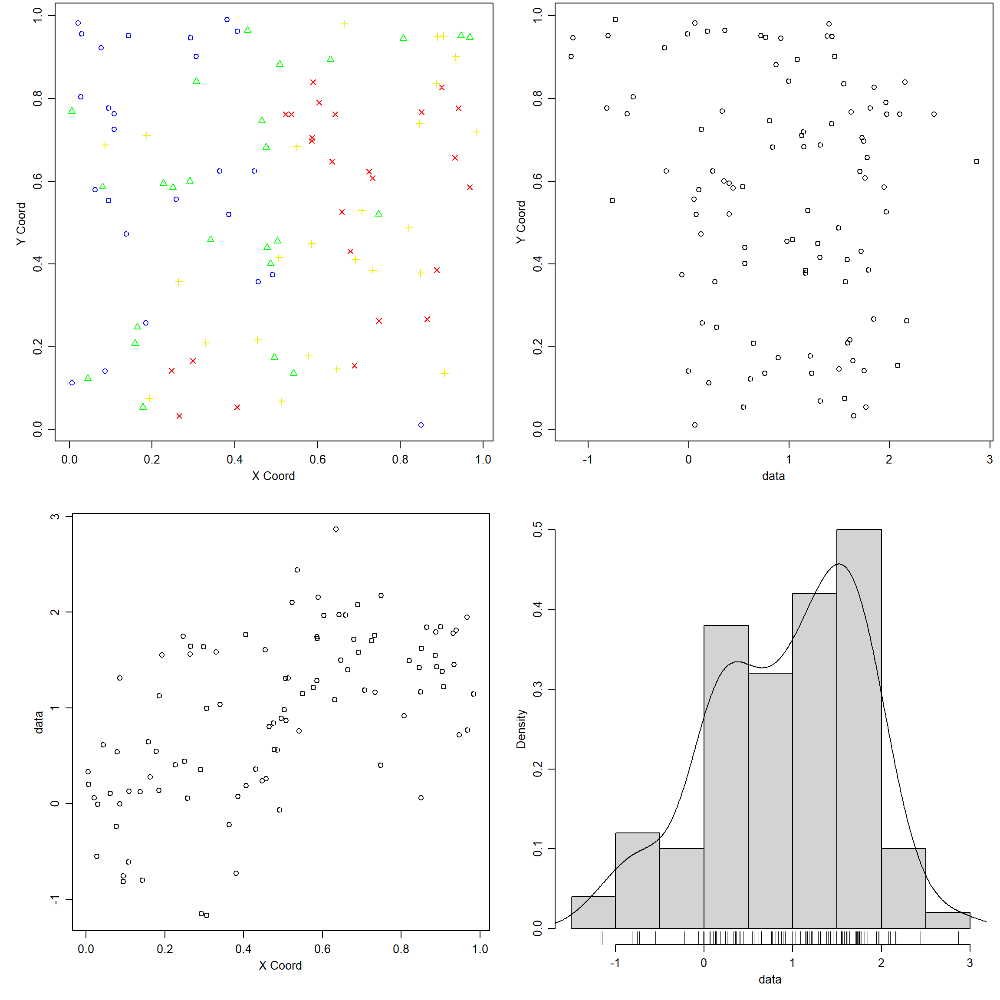
En el último apartado se tratará el caso general.
B.3.1 Variogramas empíricos
Los variogramas empíricos se calculan utilizando la función variog:
oldpar <- par(mfrow=c(1,2))
plot(variog(s100))## variog: computing omnidirectional variogramplot(variog(s100, max.dist = 0.6))## variog: computing omnidirectional variogram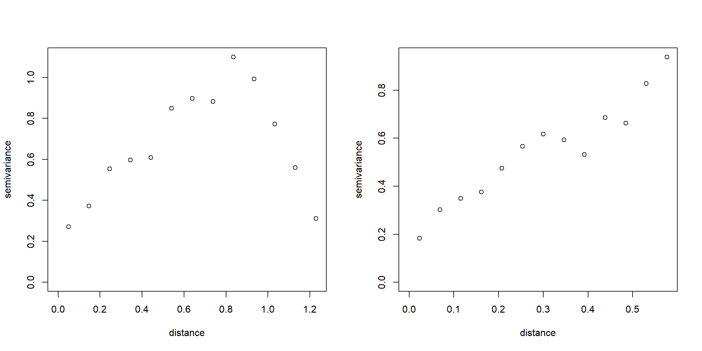
par(oldpar)La recomendación es considerar solo saltos hasta la mitad de la máxima
distancia (ver Distance summary en resultados del sumario).
vario <- variog(s100, max.dist = 0.6)## variog: computing omnidirectional variogramnames(vario)## [1] "u" "v" "n" "sd"
## [5] "bins.lim" "ind.bin" "var.mark" "beta.ols"
## [9] "output.type" "max.dist" "estimator.type" "n.data"
## [13] "lambda" "trend" "pairs.min" "nugget.tolerance"
## [17] "direction" "tolerance" "uvec" "call"# str(vario)NOTA: La componente u contiene los saltos, v las estimaciones del
semivariograma (semivarianzas) y n el número de aportaciones.
Los resultados pueden ser nubes de puntos (semivarianzas), valores
discretizados (binned) o suavizados, dependiendo del parámetro:
option = c("bin", "cloud", "smooth")
# Calculo de los variogramas empíricos
vario.b <- variog(s100, max.dist = 0.6) #discretizado## variog: computing omnidirectional variogramvario.c <- variog(s100, max.dist=0.6, op="cloud") #nube## variog: computing omnidirectional variogramvario.bc <- variog(s100, max.dist=0.6, bin.cloud=TRUE) #discretizado+nube## variog: computing omnidirectional variogramvario.s <- variog(s100, max.dist=0.6, op="sm", band=0.2) #suavizado## variog: computing omnidirectional variogram# Representación gráfica
oldpar<-par(mfrow=c(2,2)) # Preparar para 4 gráficos por ventana
plot(vario.b, main="Variograma empírico")
plot(vario.c, main="Nube de puntos variograma")
plot(vario.bc, bin.cloud=TRUE, main="Graficos de cajas")
title("Gráficos de cajas") # Corregir fallo del comando anterior
plot(vario.s, main="Variograma suavizado")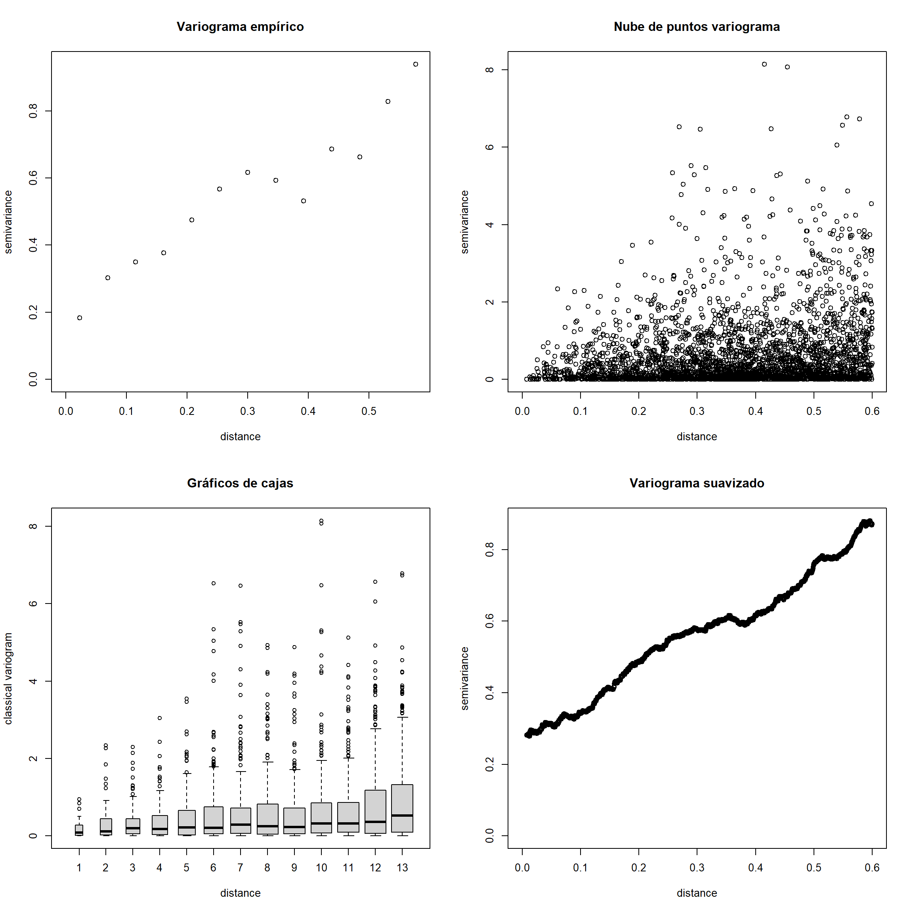
par(oldpar) # Restaurar opciones de gráficosSi hay valores atípicos (o la distribución de los datos es asimétrica)
puede ser preferible utilizar el estimador robusto. Se puede
calcular este estimador estableciendo estimator.type = "modulus":
varior.b <- variog(s100, estimator.type = "modulus", max.dist=0.6)## variog: computing omnidirectional variogramvarior.bc <- variog(s100, estimator.type = "modulus", max.dist=0.6, bin.cloud=TRUE)## variog: computing omnidirectional variogramoldpar<-par(mfrow=c(2,2)) #Preparar para 4 gráficos por ventana
plot(vario.b, main="Estimador clásico")
plot(varior.b, main="Estimador robusto")
plot(vario.bc, bin.cloud=TRUE)
plot(varior.bc, bin.cloud=TRUE)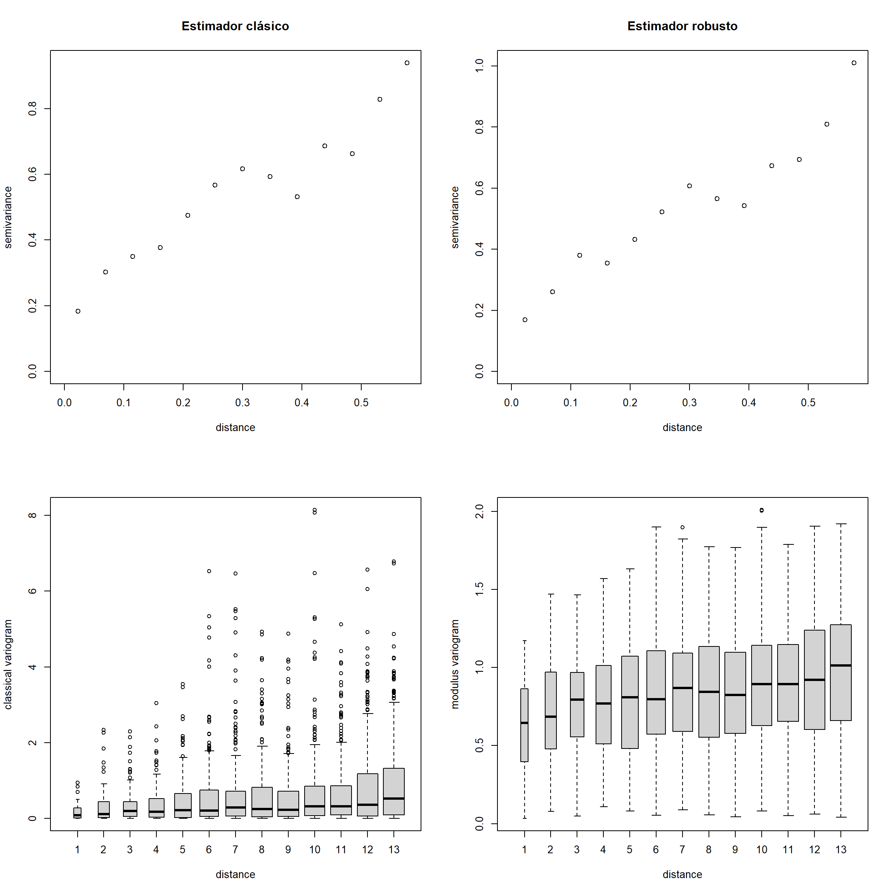
par(oldpar) #Restaurar opciones de gráficosEn el caso de anisotropía, también se pueden obtener variogramas direccionales con la función
variog mediante los argumentos direction y tolerance. Por ejemplo,
para calcular un variograma en la dirección de 60 grados (con la
tolerancia angular por defecto de 22.5 grados):
vario.60 <- variog(s100, max.dist = 0.6, direction = pi/3) #variograma en la dirección de 60 grados## variog: computing variogram for direction = 60 degrees (1.047 radians)
## tolerance angle = 22.5 degrees (0.393 radians)Para estudiar si hay anisotropía, se pueden cálcular de forma rápida variogramas
direccionales con la función variog4. Por defecto calcula cuatro variogramas
direccionales, correspondientes a los ángulos 0, 45, 90 y 135 grados:
vario.4 <- variog4(s100, max.dist = 0.6)## variog: computing variogram for direction = 0 degrees (0 radians)
## tolerance angle = 22.5 degrees (0.393 radians)
## variog: computing variogram for direction = 45 degrees (0.785 radians)
## tolerance angle = 22.5 degrees (0.393 radians)
## variog: computing variogram for direction = 90 degrees (1.571 radians)
## tolerance angle = 22.5 degrees (0.393 radians)
## variog: computing variogram for direction = 135 degrees (2.356 radians)
## tolerance angle = 22.5 degrees (0.393 radians)
## variog: computing omnidirectional variogramoldpar <- par(mfrow=c(1,2))
plot(vario.60)
title(main = expression(paste("direccional, angulo = ", 60 * degree)))
plot(vario.4, lwd = 2)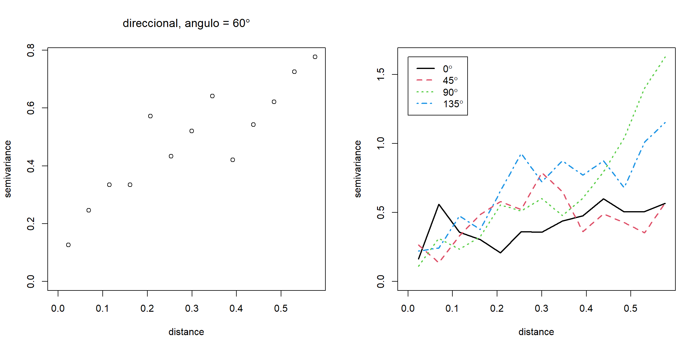
par(oldpar)B.3.2 Ajuste de un modelo de variograma
Los estimadores empíricos no pueden ser empleados en la práctica (no
verifican necesariamente las propiedades de un variograma válido), por
lo que se suele recurrir en la práctica al ajuste de un modelo válido.
Con el paquete geoR podemos realizar el ajuste:
“A ojo”: representando diferentes modelos sobre un variograma empírico (usando la función
lines.variomodelo la funcióneyefit).Por mínimos cuadrados: ajustando por mínimos cuadrados ordinarios (OSL) o ponderados (WLS) al variograma empírico (usando la función
variofit),Por máxima verosimilitud: estimando por máxima verosimilitud (ML) o máxima verosimilitud restringida (REML) los parámetros a partir de los datos (utilizando la función
likfit),Métodos bayesianos (utilizando la función
krige.bayes).
Ejemplo de ajuste “a ojo”:
vario.b <- variog(s100, max.dist=0.6) #discretizado## variog: computing omnidirectional variogramvario.s <- variog(s100, max.dist=0.6,option = "smooth", kernel = "normal", band = 0.2) #suavizado## variog: computing omnidirectional variogramplot(vario.b)
lines(vario.s, type = "l", lty = 2)
lines.variomodel(cov.model = "exp", cov.pars = c(1,0.3), nugget = 0, max.dist = 0.6, lwd = 3)
legend(0.3, 0.3, c("empirico", "suavizado", "modelo exponencial"), lty = c(1, 2, 1), lwd = c(1, 1, 3))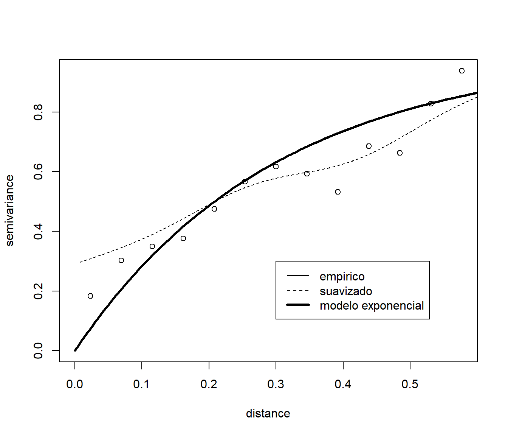
Otros ajustes:
plot(vario.b)
lines.variomodel(cov.model = "exp", cov.pars = c(0.9,0.3), nug = 0.1, max.dist = 0.6)
lines.variomodel(cov.model = "mat", cov.pars = c(0.85,0.2), nug = 0.1, kappa = 1, max.dist = 0.6,lty = 2)
lines.variomodel(cov.model = "sph", cov.pars = c(0.8,0.8), nug = 0.1, max.dist = 0.6, lwd = 2)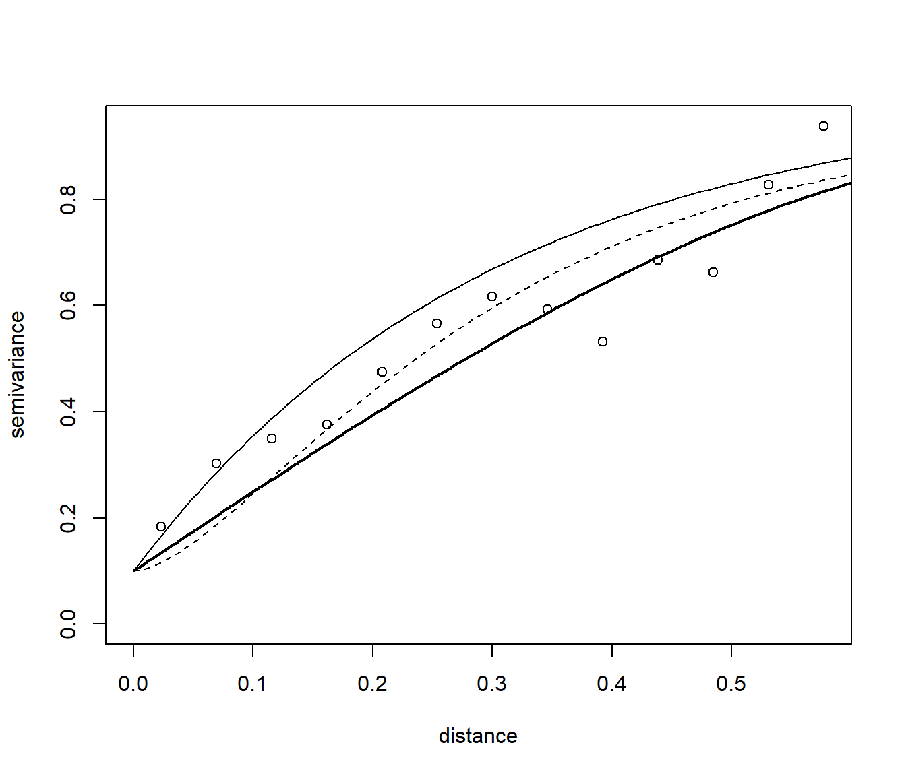
Nota: no hace falta escribir el nombre completo de los parámetros (basta con que no dé lugar a confusión).
En las versiones recientes de geoR está disponible una función para
realizar el ajuste gráficamente de forma interactiva
(cuadro de diálogo en tcl/tk):
eyefit(vario.b)Cuando se utilizan las funciones variofit y likfit para la
estimación de parámetros, el efecto pepita (nugget) puede ser estimado o
establecido a un valor fijo. Lo mismo ocurre con los parámetros de
suavidad, anisotropía y transformación de los datos. También se dispone
de opciones para incluir una tendencia. Las tendencias pueden ser
polinomios en función de las coordenadas y/o funciones lineales de otras
covariables.
Ejemplos de estimación por mínimos cuadrados (llamadas a variofit):
# Modelo exponencial con par ini umbral 1 y escala 0.5 (1/3 rango = 1.5)
vario.ols <- variofit(vario.b, ini = c(1, 0.5), weights = "equal") #ordinarios## variofit: covariance model used is matern
## variofit: weights used: equal
## variofit: minimisation function used: optimvario.wls <- variofit(vario.b, ini = c(1, 0.5), weights = "cressie") #ponderados## variofit: covariance model used is matern
## variofit: weights used: cressie
## variofit: minimisation function used: optimvario.wls## variofit: model parameters estimated by WLS (weighted least squares):
## covariance model is: matern with fixed kappa = 0.5 (exponential)
## parameter estimates:
## tausq sigmasq phi
## 0.1955 2.0110 1.4811
## Practical Range with cor=0.05 for asymptotic range: 4.437092
##
## variofit: minimised weighted sum of squares = 31.5115summary(vario.wls)## $pmethod
## [1] "WLS (weighted least squares)"
##
## $cov.model
## [1] "matern"
##
## $spatial.component
## sigmasq phi
## 2.010972 1.481138
##
## $spatial.component.extra
## kappa
## 0.5
##
## $nugget.component
## tausq
## 0.1955322
##
## $fix.nugget
## [1] FALSE
##
## $fix.kappa
## [1] TRUE
##
## $practicalRange
## [1] 4.437092
##
## $sum.of.squares
## value
## 31.5115
##
## $estimated.pars
## tausq sigmasq phi
## 0.1955322 2.0109718 1.4811376
##
## $weights
## [1] "cressie"
##
## $call
## variofit(vario = vario.b, ini.cov.pars = c(1, 0.5), weights = "cressie")
##
## attr(,"class")
## [1] "summary.variomodel"Ejemplo de estimación por máxima verosimilitud (llamada a likfit):
vario.ml <- likfit(s100, ini = c(1, 0.5)) #Modelo exponencial con par ini umbral y escala (1/3 rango)## ---------------------------------------------------------------
## likfit: likelihood maximisation using the function optim.
## likfit: Use control() to pass additional
## arguments for the maximisation function.
## For further details see documentation for optim.
## likfit: It is highly advisable to run this function several
## times with different initial values for the parameters.
## likfit: WARNING: This step can be time demanding!
## ---------------------------------------------------------------
## likfit: end of numerical maximisation.vario.ml## likfit: estimated model parameters:
## beta tausq sigmasq phi
## "0.7766" "0.0000" "0.7517" "0.1827"
## Practical Range with cor=0.05 for asymptotic range: 0.547383
##
## likfit: maximised log-likelihood = -83.57summary(vario.ml)## Summary of the parameter estimation
## -----------------------------------
## Estimation method: maximum likelihood
##
## Parameters of the mean component (trend):
## beta
## 0.7766
##
## Parameters of the spatial component:
## correlation function: exponential
## (estimated) variance parameter sigmasq (partial sill) = 0.7517
## (estimated) cor. fct. parameter phi (range parameter) = 0.1827
## anisotropy parameters:
## (fixed) anisotropy angle = 0 ( 0 degrees )
## (fixed) anisotropy ratio = 1
##
## Parameter of the error component:
## (estimated) nugget = 0
##
## Transformation parameter:
## (fixed) Box-Cox parameter = 1 (no transformation)
##
## Practical Range with cor=0.05 for asymptotic range: 0.547383
##
## Maximised Likelihood:
## log.L n.params AIC BIC
## "-83.57" "4" "175.1" "185.6"
##
## non spatial model:
## log.L n.params AIC BIC
## "-125.8" "2" "255.6" "260.8"
##
## Call:
## likfit(geodata = s100, ini.cov.pars = c(1, 0.5))Ejemplo de estimación por máxima verosimilitud restringida (opción de
likfit):
vario.reml <- likfit(s100, ini = c(1, 0.5), lik.method = "RML")## ---------------------------------------------------------------
## likfit: likelihood maximisation using the function optim.
## likfit: Use control() to pass additional
## arguments for the maximisation function.
## For further details see documentation for optim.
## likfit: It is highly advisable to run this function several
## times with different initial values for the parameters.
## likfit: WARNING: This step can be time demanding!
## ---------------------------------------------------------------
## likfit: end of numerical maximisation.summary(vario.reml)## Summary of the parameter estimation
## -----------------------------------
## Estimation method: restricted maximum likelihood
##
## Parameters of the mean component (trend):
## beta
## 0.7478
##
## Parameters of the spatial component:
## correlation function: exponential
## (estimated) variance parameter sigmasq (partial sill) = 0.8473
## (estimated) cor. fct. parameter phi (range parameter) = 0.2102
## anisotropy parameters:
## (fixed) anisotropy angle = 0 ( 0 degrees )
## (fixed) anisotropy ratio = 1
##
## Parameter of the error component:
## (estimated) nugget = 0
##
## Transformation parameter:
## (fixed) Box-Cox parameter = 1 (no transformation)
##
## Practical Range with cor=0.05 for asymptotic range: 0.6296295
##
## Maximised Likelihood:
## log.L n.params AIC BIC
## "-81.53" "4" "171.1" "181.5"
##
## non spatial model:
## log.L n.params AIC BIC
## "-125.1" "2" "254.1" "259.3"
##
## Call:
## likfit(geodata = s100, ini.cov.pars = c(1, 0.5), lik.method = "RML")NOTAS:
Para fijar el nugget a un valor p.e. 0.15 añadir las opciones:
fix.nugget = TRUE, nugget = 0.15.Se puede tener en cuenta anisotropía geométrica en los modelos de variograma a partir de los parámetros
psiA(ángulo, en radianes, de la dirección de mayor dependencia espacial i.e. con el máximo rango) ypsiR(relación, mayor o igual que 1, entre los rangos máximo y mínimo). Se pueden fijar a distintos valores o estimarlos incluyendo las opcionesfix.psiA = FALSEyfix.psiR = FALSEen las llamadas a las rutinas de ajuste.)
Representación gráfica junto al estimador empírico:
plot(vario.b, main = "Estimador empírico y modelos ajustados")
lines(vario.ml, max.dist = 0.6)
lines(vario.reml, lwd = 2, max.dist = 0.6)
lines(vario.ols, lty = 2, max.dist = 0.6)
lines(vario.wls, lty = 2, lwd = 2, max.dist = 0.6)
legend(0.3, 0.3, legend = c("ML", "REML", "OLS", "WLS"), lty = c(1, 1, 2, 2), lwd = c(1, 2,1, 2)) 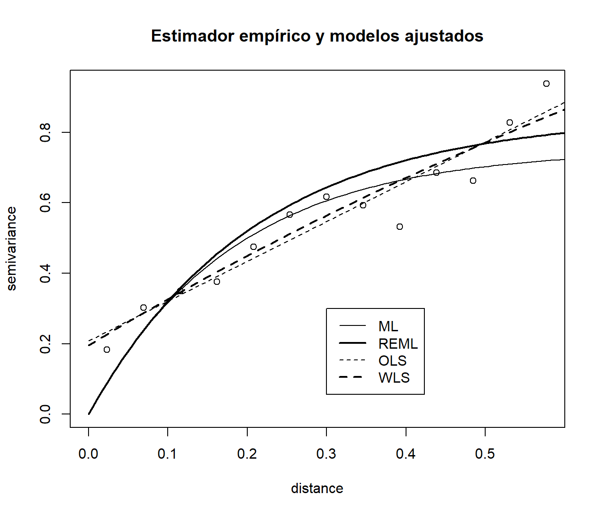
B.3.3 Inferencia sobre el variograma
Se pueden obtener dos tipos de envolventes (envelopes, i.e. valores máximos y mínimos aproximados) del variograma empírico mediante simulación:
Bajo la hipótesis de que no hay correlación espacial (obtenidos por permutaciones aleatorias de los datos sobre las posiciones espaciales), para estudiar si hay una dependencia espacial “significativa”.
Bajo un modelo de variograma, para ilustrar la variabilidad del variograma empírico.
env.indep <- variog.mc.env(s100, obj.var = vario.b)## variog.env: generating 99 simulations by permutating data values
## variog.env: computing the empirical variogram for the 99 simulations
## variog.env: computing the envelopsenv.model <- variog.model.env(s100, obj.var = vario.b, model = vario.wls)## variog.env: generating 99 simulations (with 100 points each) using the function grf
## variog.env: adding the mean or trend
## variog.env: computing the empirical variogram for the 99 simulations
## variog.env: computing the envelopsoldpar <- par(mfrow = c(1, 2))
plot(vario.b, envelope = env.indep)
plot(vario.b, envelope = env.model)
lines(vario.wls, lty = 2, lwd = 2, max.dist = 0.6)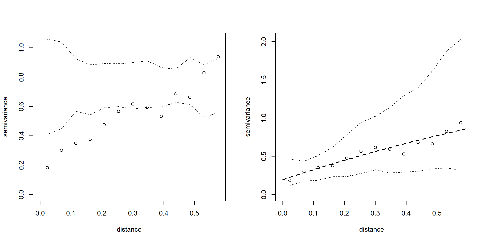
par(oldpar) Para estudiar si hay una dependencia espacial “significativa” se puede
emplear también la rutina sm.variogram del paquete sm.
Estableciendo model = "independent"
devuelve un p-valor para contrastar la hipótesis nula de independencia
(i.e. se acepta que hay una dependencia espacial si \(p \leq \alpha = 0.05\))
y un gráfico en el que se muestra el estimador empírico robusto, un estimador
suavizado y una región de confianza para el variograma suponiendo que el
proceso es independiente (i.e. consideraríamos que hay dependencia
espacial si el variograma suavizado no está contenido en esa región).
library(sm)
sm.variogram(s100$coords, s100$data, model = "independent")## Test of spatial independence: p = 0.024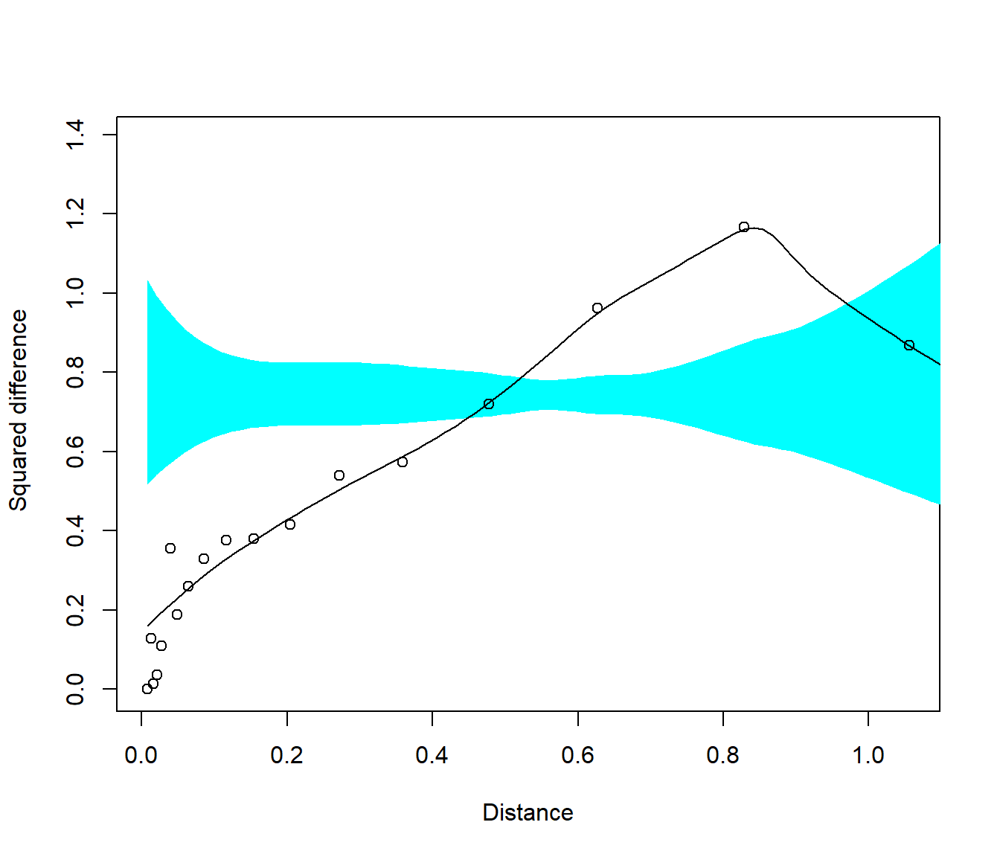
Nota: Se puede realizar contrastes adicionales estableciendo el parámetro model
a "isotropic" o "stationary".
B.3.4 Estimación del variograma en procesos no estacionarios
Cuando el proceso no es estacionario (no se puede emplear directamente los estimadores empíricos) hay que eliminar la tendencia para estimar el variograma:
oldpar <- par(mfrow=c(1,2))
plot(variog(wolfcamp, max.dist = 200)) # Supone que el proceso es estacionario## variog: computing omnidirectional variogramplot(variog(wolfcamp, trend = ~coords, max.dist = 200)) # Asume una tendencia lineal en las coordenadas## variog: computing omnidirectional variogram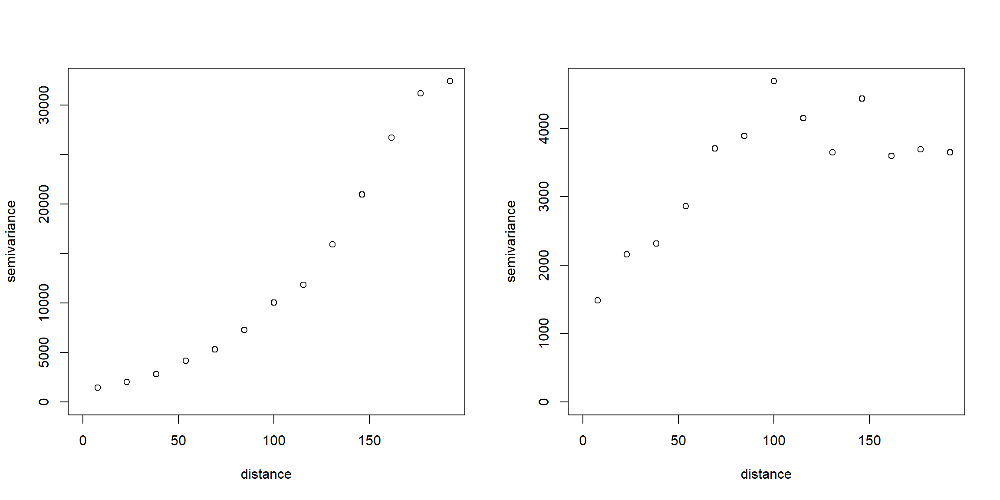
par(oldpar)